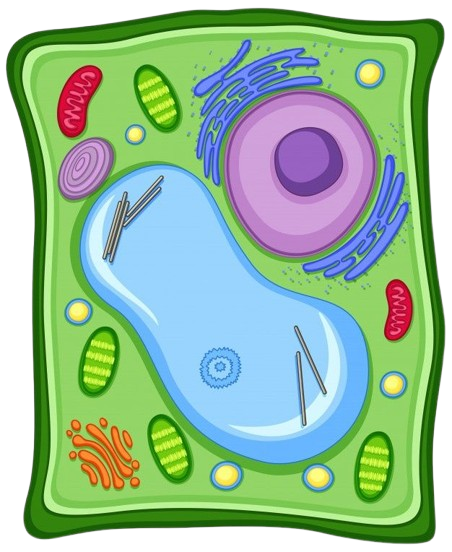

TRANSPORTE DE
MEMBRANAS
Um jogo interativo para aprender sobre o transporte celular!

INICIAR JOGO
menu
Quiz - Transporte de Membranas
Mostrar dica ( 5 restantes )
Questões
Carregando pergunta...
Selecione uma resposta abaixo:
Pontuação: 0
check_circle